VoLTE
VoLTE- =
Voice over LTE
- =
- 出现背景
- 3GPP Release 8发布了
LTE - 现存几种系统
- 传统的：（基于
CS的）语音voice服务 - 新的：（基于
LTE的）多媒体短信SMS服务- 范围：通过
3G网络实现的- 不带
CS
- 不带
- 几种方案
3GPP的CSFBIMS- 非国际标准的
VoLGA
- 范围：通过
- 传统的：（基于
GSMA建议统一成一种：基于IMS的VoLTE- 其他方式都转换成
IMS的- Voice service migration
- 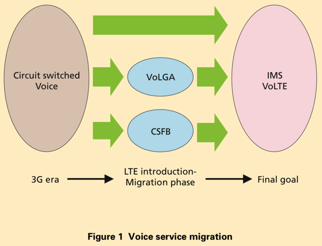
- Voice service migration
- 其他方式都转换成
- 3GPP Release 8发布了
- 为何需要
VoLTE- 如果想要在
4G网络中实现语音通话=打电话- 之前：
- 需要额外部署实现一套
3G网络，底层是用基于CS的方式，去实现语音数据传输，实现打电话- 接入方式效率很低，还需要占用收取授权费的频谱
- 需要额外部署实现一套
- 有了
VoLTE- 在已有的
4G的LTE/EPC网络之上，基于PS的方式，传输控制信号和语音媒体数据，实现打电话- 无需额外的3G网络
- 大大提高了通信效率
- 在已有的
- 之前：
- 如果想要在
- 现状
VoLTE广泛流行，主流网络运营商都已支持
- 相关
ViLTE- 作为
VoLTE的补充 - 也是
GMSA制定的规范 - 也正在被慢慢接受
- 作为
- 前景
VoLTE和ViLTE逐渐成为基于IP的网络的核心服务- 就像
- 语音是
2G和3G网络的核心服务
- 语音是
- 就像
- 功能
- 实现高清电话
- 用于帮助网络运营商对抗
OTT互联网的VoIP服务
- 用于帮助网络运营商对抗
- 实现高清电话
- 优势和特点
- 延迟更低，容量更高
- 对比
OTT的VoIP- 其最大化利用了底层网络能力
- 会在一定程度上影响音视频服务的质量
- 其最大化利用了底层网络能力
- 对比
- 支持
QoS
- 延迟更低，容量更高
- 架构
VoLTE的架构=Profile=configuration- VoLTE network configuration
- 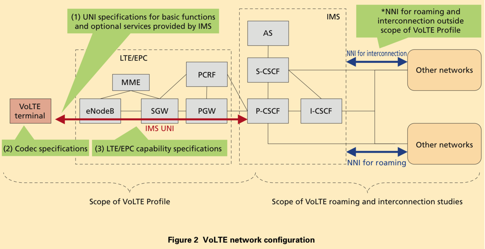
- -> VoLTE Profile中：
- 定义了：
UNI - 但是没定义：
NNI- 涉及到不同网络之间的交互和漫游
- 其他规范中定义了
- 涉及到不同网络之间的交互和漫游
- 定义了：
- VoLTE network configuration
- GSMA PRD IR.92 Depiction of UE and Network Protocol Stacks in IMS Profile for Voice
- 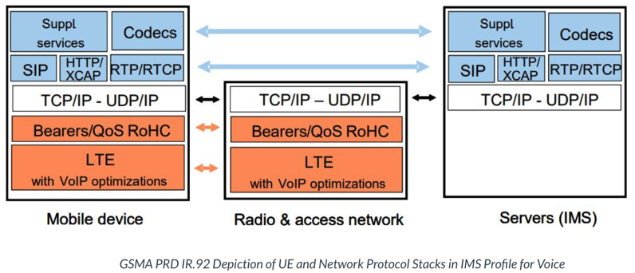
- 作用
- VoLTE中的
SIP用于 （传输）控制（信号）- registration
- authentication
- addressing
- call establishment
- call termination
SDP用于 （传输音视频）数据RTPmedia and bandwidth negotiation
- VoLTE中的
- 服务标准：
SR-VCCSR-VCC=Single Radio Voice Call Continuity- 背景
- 当LTE网络还没完全覆盖时，但却又希望提供VoLTE和ViLTE的服务
- 方案
- 为了解决当单射频UE在LTE/Pre-LTE 网络和2G/3G CS网络之间移动时，如何保证语音呼叫连续性的问题
- 3GPP提出的一种VoLTE语音业务连续性方案
- 实现2G/23到VoLTE的语音电话的无缝衔接
- 实现voice call continuity=持续性语言呼叫=保持语音的持续性（不断掉）
- 等级
eSRVCC=enhanced SR-VCCvSRVCC=video SR-VCCrSRVCC=reverse SR-VCC
- 具体实现路径（策略）
- 有多种
- 根据运营商的不同情况
- 可用的频谱多少
- 语音策略
- 技术架构
- 商业目标
- 市场情况
- 根据运营商的不同情况
- 举例
- 逐渐演化的方式
- 以
CSFB开始 - 先部署好IMS
- 在
LTE网络没有完全覆盖之前- 再引入
SR-VCC
- 再引入
- 以
- 一步到位方式
- 当
LTE网络完全覆盖后 - 再直接实现
VoLTE
- 当
- 逐渐演化的方式
- 有多种
- 编解码codec
EVS=Enhanced Voice Services- 不同模式
WB=WideBandSWB=Super-WideBandFB=Full-Band
- 不同比特率
- 不同模式
- 符合监管Regulatory
- 美国和加拿大
- E-911 location requirements
- text-to-911
- 紧急和警报服务 emergency and alerting services
- 合法监听 lawful interception
- 政府优先服务 government priority services
- 美国和加拿大
- 漫游
- 架构=模型
- 旧：
LBO=Local Breakout - 新：
S8HR=S8 Home Routed
- 旧：
- 涉及到多个方面
- 收费 billing and charging
- 紧急情况 emergency
- 合法监听 lawful interception
- 架构=模型
- 实现方案
- 举例
- 某公司：CATALEYA
- 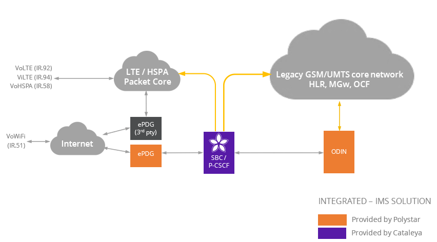
- 某公司：CATALEYA
- 举例
- VoLTE
- VoLTE规范：
- 定义了
- 对于
- 移动端设备
- 网络
- （至少）需要支持哪些功能
- 对于
- 才能实现
- 互操作性
- 高质量的语言服务
- 基于IMS的
- 通过LTE实现
- 定义了
- 历史背景
- SMS短信
- SMS over generic IP CAN architecture
- 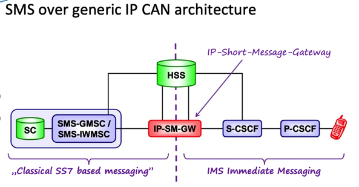
- SMSoIP - Registration
- 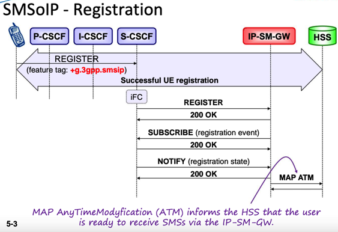
- UE originated SMS
- 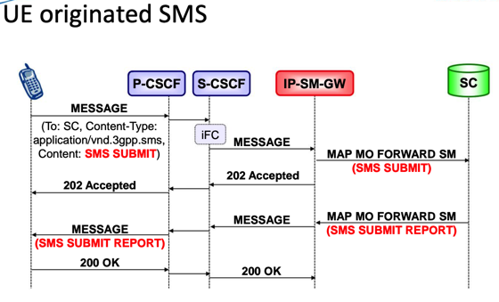
- 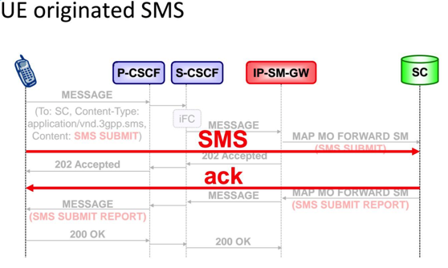
- UE terminated SMS
- 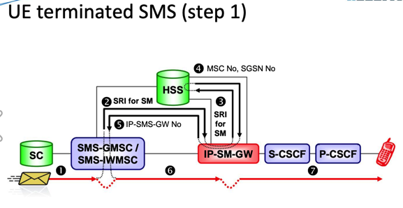
- 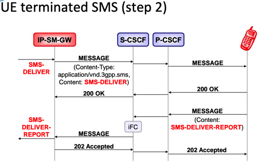
- 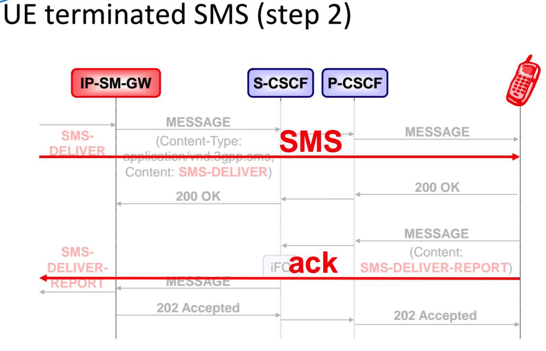
- SMS over generic IP CAN architecture
- SMS短信
- VoLTE规范：